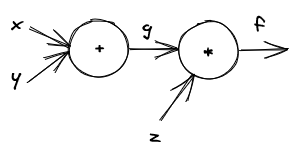
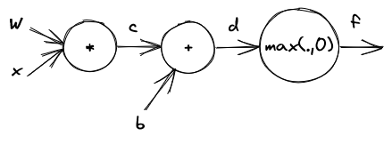
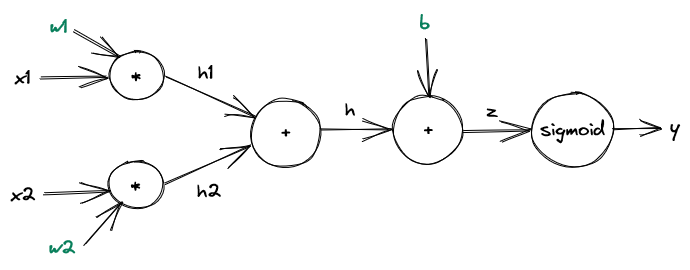
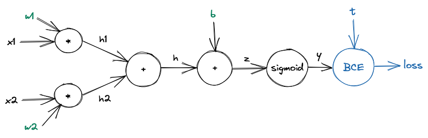
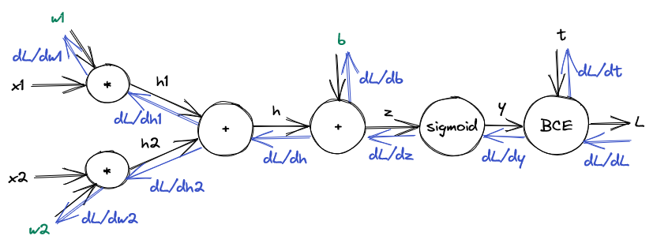

Computational Graphs and Backpropagation#
In this chapter we will introduce the fundamental concepts that underpin all of deep learning - computational graphs and backpropagation. To showcase these ideas we will create and train a neural network from scratch which will solve a very simple classification task.
If you want to follow along, you will need to execute the following imports:
from math import *
import torch
import torch.nn as nn
import torch.optim as optim
from torch.autograd import Function
Computational Graphs#
The basic concept you need to understand in order to grasp neural networks is that of a computational graph.
Remember that a graph has nodes and edges. In a computational graph the nodes represent functions. These functions take input values and produce (compute) output values. The edges carry these values (which are either input values to the graph or results of preceding computations). Thus, computational graphs allow for simple representations of complex functions.
Let’s respresent an example function \(f: \mathbb{R}^3 \rightarrow \mathbb{R}, f(x, y, z) = (x + y) \cdot z\) using a computational graph. We will write \(f = (x + y) \cdot z\) to simplify notation.
This function really consists of two functions. The first function calculates \(x + y\). The second function multiplies the result of \(x + y\) by \(z\). Put more formally, we first compute \(g = x + y\) and then calculate \(f = g \cdot z\).
This is how the visual representation of the computational graph representing \(f\) would look like:
{kind=link}
Do note that this is not the most common visualization of computational graphs. Nevertheless we will stick to it, since it drives home most of the important ideas quite nicely.
We can see that the graph has two nodes. The first node represents an addition function. It takes the values \(x\) and \(y\) and outputs the value \(g\). The second node represents a multiplication function. It takes the values \(g\) and \(z\) and outputs the value \(f\). Note that here one of the inputs to the multiplication node (namely \(g\)) is the output of a previous node (namely the addition node).
By decomposing arbitrary functions into simple components we can create computational graphs that represent very complex functions. In fact neural networks are nothing more than just certain kinds of computational graphs, namely computational graphs which are differentiable. This means that every node function has a gradient (or more technically a subgradient, but this distinction largely doesn’t matter right now). If all of this sounds like wizardry, don’t worry - we will get into this in a few minutes.
We just saw that the edges carry values. But which values do they carry? There aren’t many restrictions here. While in the above examples we had numbers, there is nothing that prevents us from passing vectors, matrices or even more complicated objects around. In fact, this is what we will usually do!
Consider the function \(f: \mathbb{R}^{n} \rightarrow \mathbb{R}^{m}, f(\vec{x}) = \max(W\vec{x} + \vec{b}, \vec{0})\) where \(W \in \mathbb{R}^{m \times n}\), \(\vec{b} \in \mathbb{R}^{m}\) and \(\max\) is the elementwise maximum.
The form of this function is no accident. It represents a (very simple) neural network.
We can break this function up as following:
\(\vec{c} = W\vec{x}\)
\(\vec{d} = \vec{c} + \vec{b}\)
\(\vec{f} = \max(\vec{d}, \vec{0})\)
The visual representation looks like this:
{kind=link}
Generally, the values that will flow through our computational graph can be arbitrary tensors.
Tensor#
There are different definitions of tensors depending on the mathematical branch you’re in. For the purposes of deep learning, a tensor is nothing else than a multidimensional array (if you’ve ever used numpy arrays, this is very similar).
For example, a zero-dimensional tensor is just a number:
tensor0 = torch.tensor(1)
print(tensor0)
tensor(1)
A one-dimensional tensor is a vector (or an array or a list, depending on what language you like more):
tensor1 = torch.tensor([1, 2, 3, 4])
print(tensor1)
tensor([1, 2, 3, 4])
A two-dimensional tensor is a matrix:
tensor2 = torch.tensor([[1, 2, 3], [4, 5, 6]])
print(tensor2)
tensor([[1, 2, 3],
[4, 5, 6]])
You can also construct tensors of three, four or any arbitrary number of dimensions. Here is how a three-dimensional tensor could look like:
tensor3 = torch.tensor([[[1, 2], [4, 5]], [[6, 7], [8, 9]]])
print(tensor3)
tensor([[[1, 2],
[4, 5]],
[[6, 7],
[8, 9]]])
You can get the dimension of a tensor using the dim function:
print(tensor0.dim(), tensor1.dim(), tensor2.dim(), tensor3.dim())
0 1 2 3
Why would we need such high-dimensional tensors? Consider an NLP task where each word is represented by a high-dimensional vector (this is the first dimension). A text consists of multiple words (this is the second dimension). To decrease training time, we often pass multiple texts at the same time through a neural network (this is the third dimension). I want to reiterate, that this is not some theoretical construction, but in fact a very common setup. So the earlier you get used to high-dimensional tensors, the better.
This is not meant to intimidate you (of course we would say that, wouldn’t we). High-dimensional tensors sound scary (mostly because people associate them with quantum mechanics and the like), but for our purposes we don’t care about most of that scariness. In fact, a lot of concepts concerning vectors and matrices generalize quite nicely to tensors.
For example tensor addition and tensor-constant multiplication are done componentwise (just like with vectors and matrices):
t1 = torch.tensor([[1, 2, 3], [4, 5, 6]])
t2 = torch.tensor([[2, 1, 2], [3, 1, 0]])
print(t1 + t2)
tensor([[3, 3, 5],
[7, 6, 6]])
print(3 * t1)
tensor([[ 3, 6, 9],
[12, 15, 18]])
Consider another operation we will commonly use with tensors - their product (which we denote by \(\otimes\)). Do note that we will introduce a very particular tensor product (which is sometimes called the matrix product of tensors). Depending on your background, you may be familiar with other tensor products.
This is nothing unusual. Consider matrix products for example. There is the matrix multiplication and the Hadamard product (which is the element-wise multiplication of two matrices). In fact, PyTorch has a multitude of functions for computing tensor products (for example matmul and tensordot, which do different things). > I want to stress - we introduce the tensor product the way we do because that is what is useful for us in deep learning - no more, no less.
The product of two one-dimensional tensors is essentially the dot product. For example if \(\vec{v} = \begin{bmatrix} 1 \\ 2 \\ 3 \\ 4 \end{bmatrix}\) and \(\vec{w} = \begin{bmatrix} 5 \\ 6 \\ 7 \\ 8 \end{bmatrix}\), then \(\vec{v} \otimes \vec{w} = 1 \cdot 5 + 2 \cdot 6 + 3 \cdot 7 + 4 \cdot 8 = 70\). This is where you might have a first clash with the tensor product as it is known in other areas (where \(\vec{v} \otimes \vec{w}\) may be the outer product of \(\vec{v}\) and \(\vec{w}\)).
To compute this in pytorch, we could use the dot function:
v = torch.tensor([1, 2, 3, 4])
w = torch.tensor([5, 6, 7, 8])
print(torch.dot(v, w))
tensor(70)
We could also use the matmul function, which also generalizes to higher-dimensional tensors:
v = torch.tensor([1, 2, 3, 4])
w = torch.tensor([5, 6, 7, 8])
print(torch.matmul(v, w))
tensor(70)
The product of a one-dimensional tensor and a two-dimensional tensor is just regular matrix-vector multiplication. For example if \(W = \begin{bmatrix} 1 & 3 \\ 5 & 7 \\ 9 & 11 \end{bmatrix}\) and \(\vec{x} = \begin{bmatrix} 2 \\ 4 \end{bmatrix}\), then \(W \otimes \vec{x} = W \cdot \vec{x} = \begin{bmatrix} 1 \cdot 2 + 3 \cdot 4 \\ 5 \cdot 2 + 7 \cdot 4 \\ 9 \cdot 2 + 11 \cdot 4 \end{bmatrix} = \begin{bmatrix} 14 \\ 38 \\ 62 \end{bmatrix}\).
Let us reproduce this with pytorch:
W = torch.tensor([[1, 3], [5, 7], [9, 11]])
x = torch.tensor([2, 4])
print(torch.matmul(W, x))
tensor([14, 38, 62])
Similarly the product of two two-dimensional tensors is just regular matrix-matrix multiplication. For example if \(U = \begin{bmatrix} 1 & 2 \\ 3 & 4 \\ 5 & 6 \end{bmatrix}\) and \(V = \begin{bmatrix} 2 & 1 \\ 1 & 3 \end{bmatrix}\), then \(U \otimes V = U \cdot V = \begin{bmatrix} 1 \cdot 2 + 2 \cdot 1 & 1 \cdot 1 + 2 \cdot 3 \\ 3 \cdot 2 + 4 \cdot 1 & 3 \cdot 1 + 4 \cdot 3 \\ 5 \cdot 2 + 6 \cdot 1 & 5 \cdot 1 + 6 \cdot 3 \end{bmatrix} = \begin{bmatrix} 4 & 7 \\ 10 & 15 \\ 16 & 23 \end{bmatrix}\)
U = torch.tensor([[1, 2], [3, 4], [5, 6]])
V = torch.tensor([[2, 1], [1, 3]])
print(torch.matmul(U, V))
tensor([[ 4, 7],
[10, 15],
[16, 23]])
But what about products of tensors with more than two dimensions? The tensor product generalizes in a straighforward fashion. Consider the multiplication of a three-dimensional tensor \(Q\) of dimension \(m \times n \times d\) (i.e. \(Q \in \mathbb{R}^{m \times n \times d}\)) with a one-dimensional tensor \(\vec{x}\) of dimension \(d\) (i.e. \(\vec{x} \in \mathbb{R}^d\)). We can treat \(Q\) as a list of \(m\) matrices of dimension \(n \times d\) each. Then we simply compute \(m\) vector-matrix products. Each such product is a product of a matrix \(Q_i \in \mathbb{R}^{n \times d}\) and the vector \(\vec{x} \in \mathbb{R}^d\). Therefore each product results in vector of dimension \(n\). We can stack these vectors back into a matrix resulting in a matrix of dimension \(\mathbb{R}^{m \times n}\).
Consider the tensor \(Q = \begin{bmatrix} \begin{bmatrix} 1 & 0 & 1 \\ 0 & 1 & 0 \\ 1 & 0 & 1 \\ 1 & 1 & 1\end{bmatrix}, \begin{bmatrix} 0 & 0 & 1 \\ 0 & 1 & 1 \\ 1 & 1 & 1 \\ 1 & 0 & 0 \end{bmatrix} \end{bmatrix}\) and the vector \(\vec{x} = \begin{bmatrix} 5 \\ 6 \\ 7 \end{bmatrix}\). We can think of \(Q\) as a list of two matrices \(Q = \begin{bmatrix} Q_1 & Q_2 \end{bmatrix}\) where \(Q_1 = \begin{bmatrix} 1 & 0 & 1 \\ 0 & 1 & 0 \\ 1 & 0 & 1 \\ 1 & 1 & 1 \end{bmatrix}\) and \(Q_2 = \begin{bmatrix} 0 & 0 & 1 \\ 0 & 1 & 1 \\ 1 & 1 & 1 \\ 1 & 0 & 0 \end{bmatrix}\).
Now we have \(Q \otimes \vec{x} = \begin{bmatrix} (Q_1 \cdot \vec{x})^\intercal \\ (Q_2 \cdot \vec{x})^\intercal \end{bmatrix}\) (note that we need to transpose the individual dot products). Now we easily obtain \(Q_1 \cdot \vec{x} = \begin{bmatrix} 12 \\ 6 \\ 12 \\ 18 \end{bmatrix}\) and \(Q_2 \cdot \vec{x} = \begin{bmatrix} 7 \\ 13 \\ 18 \\ 5 \end{bmatrix}\). Stacking these vectors together, we get that \(Q \otimes \vec{x} = \begin{bmatrix} 12 & 6 & 12 & 18 \\ 7 & 13 & 18 & 5 \end{bmatrix}\).
Let’s confirm this in code.
First, we initialize the tensors Q and x:
Q = torch.tensor([
[[1, 0, 1], [0, 1, 0], [1, 0, 1], [1, 1, 1]],
[[0, 0, 1], [0, 1, 1], [1, 1, 1], [1, 0, 0]]
])
print(Q.size())
torch.Size([2, 4, 3])
x = torch.tensor([5, 6, 7])
print(x.size())
torch.Size([3])
Now, we use the matmul function to compute the (matrix) product of Q and x:
y = torch.matmul(Q, x)
print(y.size())
torch.Size([2, 4])
print(y)
tensor([[12, 6, 12, 18],
[ 7, 13, 18, 5]])
Our First Neural Network#
Armed with the concepts we just learned, we can now construct our first very simple neural network.
We will attempt to fit a toy classification dataset. Recall from the high-level overview chapter that the neural network fits the data if it labels all points from a dataset (more or less) correctly. Note that will not worry about concepts like validation or testing in this chapter. The only thing we will worry about is the training (fitting) process.
Let’s create a toy dataset:
x1s = torch.tensor([0.0, 0.0, 1.0, 1.0])
x2s = torch.tensor([0.0, 1.0, 0.0, 1.0])
ts = torch.tensor([0, 0, 0, 1])
for i in range(4):
print(f"x1={x1s[i]}, x2={x2s[i]}, t={ts[i]}")
x1=0.0, x2=0.0, t=0
x1=0.0, x2=1.0, t=0
x1=1.0, x2=0.0, t=0
x1=1.0, x2=1.0, t=1
If you are familiar with basic logic, this is just the truth table for the AND function.
Of course we can fit such a trivial dataset without fancy deep learning techniques. Nevertheless this is a very nice example that will allow us to showcase a few important concepts.
Let’s think about the simplest meaningful computational graph we could construct here. This would obviously be some kind of affine function, i.e. something that has the form \(f(x) = x_1 \cdot w_1 + x_2 \cdot w_2 + b\). However, the output of an affine function can be arbitrary, but our classes can only take the values 0 and 1 (i.e. we are dealing with binary classification here). We would therefore like to squash the outputs of our function to the range \([0, 1]\). Then we can interpret the squashed value as the probability of the class represented by 1. For example if the squashed output is \(0.7\), then we would say that the data point has the class 1 with probability \(0.7\). This has the added benefit that we can assign a confidence to our predictions. If the probability is very high (or very low), we have more confidence regarding our prediction than if the probability is e.g. \(0.5\).
A commonly used squashing function is the so called sigmoid function defined by \(\sigma(z) = \frac{1}{1 + \exp(-z)}\). It looks like this:
import matplotlib.pyplot as plt
import numpy as np
sigmoid_xs = np.arange(-10, 10, 0.01)
sigmoid_ys = 1 / (1 + np.exp(-sigmoid_xs))
plt.plot(sigmoid_xs, sigmoid_ys)
[<matplotlib.lines.Line2D at 0x7f85d78b12b0>]
We can see the very small values essentially become 0, very large values essentially become 1 and everything in between is mapped to an appropriate value between \(0\) and \(1\) in a monotonous way (with \(\sigma(0) = 0.5\)). This looks like a function that accomplishes what we intended.
Therefore we define our first neural network by applying a sigmoid function to an affine function. Yes, that’s really all we are going to do! Note that while this is the simplest meaningful setup for a classification task, it is still a pratically useful setup that is used for certain tasks.
Formally speaking, our network is defined as \(y = f(\vec{x}) = f(x_1, x_2) = \sigma(x_1 \cdot w_1 + x_2 \cdot w_2 + b)\).
Let us represent this function using a computational graph.
First we split \(f\) into its respective computations:
\(h_1 = x_1 \cdot w_1\)
\(h_2 = x_2 \cdot w_2\)
\(h = h_1 + h_2\)
\(z = h + b\)
\(y = \sigma(z)\)
Let’s explicitly draw the graph:
{kind=link}
Note that this computational graph is indeed differentiable since every function has a derivative.
Recall that the basic idea behind the training of (any) machine learning model is quite simple. We start with randomly initialized parameters (we will discuss initialization schemes later). Then we iterate through all the examples and update the parameters in such a way that we improve our performance on those examples. We often do multiple iterations on the dataset. Each iteration is called an epoch. In its simplest form, the training loop therefore looks like this:
model = NeuralNetwork()
for epoch in range(epochs):
for x, t in dataset:
model.update(x, t)
There are a few pratical considerations missing here - we will talk about them later.
The big question we will discuss next is how the update should be performed. Intuitively, we would like to update the model parameters in such a way that the network “performs” a bit better on the example \(x\) labeled with the target value \(t\).
The Parameter Update#
How could we accomplish that?
First of all, we need to specify what we mean by “better performance”. That is we need to quantify how well a neural network performs on an example \(x\) labeled with the target value \(t\).
To achieve that, we define a loss function which is the measure of how far the output of the network is from the correct target. We then simply update our parameters in such a way that the loss decreases. Put differently, we want to minimize the loss.
In this particular case we will use a loss function called binary crossentropy which is defined as \(BCE(y, t) = -t \cdot log(y) - (1 - t) \cdot log(1 - y)\). Here \(y\) is the value produced by our network and \(t\) is the target value.
Binary crossentropy is a concept deep learning shamelessly stole (a.k.a. borrowed) from information theory, but we will not go into all that and instead motivate it with very simple intuition. Basically if \(t = 1\), then we want the loss to be proportional to \(-\log(y)\). This is because a lower \(y\) in our interpretation means a higher probability of \(t = 0\) which is bad if in reality \(t = 1\). Similarly, if \(t = 0\), we want the loss to be proportional to \(-\log(1 - y)\). Now we simply combine this into one expression which gets us the formula from above.
How does the loss fit into the computational graph? Even deep learning practicioners sometimes get confused about that, but the simple truth is that the loss is just another node put on top of the network:
{kind=link}
Let us take our simple neural net and set \(w_1 = w_2 = 0.5\), \(b = 0\). A quick calculation yields an output value of \(y = 0.6225\) for \(x_1 = 0\), \(x_2 = 1\). We see that the output value is not quite right. It should be \(t = 0\) and not \(y = 0.6225\). Therefore we want to update the parameters of the network (i.e. \(w_1, w_2\) and \(b\)) in such a way that the output \(y\) becomes a bit closer to the target \(t\).
What this really means is that we have to update our weights in such a way that the loss (let us call it \(L\)) becomes smaller. How could we approach this?
If you have some basic knowledge of optimization theory, you are probably smirking right now. This is what gradient descent (and a bunch of other optimization algorithms) are for! However, even if you do not know any numerical optimization, you can still easily develop an idea for what we should do.
Remember from high school that the derivative \(\frac{\partial L}{\partial b}\) tells you the way \(L\) changes if we change \(b\). For example, if \(\frac{\partial L}{\partial b} > 0\) then increasing \(b\) would lead to an increase in \(L\). If \(\frac{\partial L}{\partial b} < 0\) then an increase in \(b\) would lead to a decrease in \(L\).
Now assume that we somehow get our hands on \(\frac{\partial L}{\partial b}\). We want to change \(b\) in such a way that \(L\) decreases. After all, we want to minimize the loss. Therefore we should update \(b\) by a value proportionate to \(-\frac{\partial L}{\partial b}\). Put differently, we want to update \(b\) by \(-\alpha \cdot \frac{\partial L}{\partial b}\) where \(\alpha\) is some parameter that controls how big our update should be. More formally, the update step looks as follows:
\(b^{(t+1)} = b^{(t)} - \alpha \cdot \frac{\partial L}{\partial b^{(t)}}\)
That is, at step \(t\) we update \(b\) by subtracting \(\alpha \cdot \frac{\partial L}{\partial b^{(t)}}\) from it.
Similar logic applies to the other parameters, i.e.
\(w_1^{(t+1)} = w_1^{(t)} - \alpha \cdot \frac{\partial L}{\partial w_1^{(t)}}\)
\(w_2^{(t+1)} = w_2^{(t)} - \alpha \cdot \frac{\partial L}{\partial w_2^{(t)}}\)
After such an update the loss would become smaller. But how could we could calculate the derivative \(\frac{\partial L}{\partial b}\)? Calculating e.g. the derivative \(\frac{\partial L}{\partial y}\) would be easy - we would simply need to take the derivative of the loss function. But \(b\) does not influence the loss directly, it influences the loss through \(y\).
There is no reason to despair here, as we can use the chain rule. We know that \(\frac{\partial L}{\partial b}\) can be calculated as \(\frac{\partial L}{\partial b} = \frac{\partial L}{\partial y} \frac{\partial y}{\partial b}\). But now we have the same problem. Again \(b\) is not a direct input to \(y\). How do we get \(\frac{\partial y}{\partial b}\)?
You can probably already see where this is going. We see that \(y\) depends on \(b\) through \(z\). By the chain rule we have \(\frac{\partial y}{\partial b} = \frac{\partial y}{\partial z} \frac{\partial z}{\partial b}\).
We therefore have: \(\frac{\partial L}{\partial b} = \frac{\partial L}{\partial y} \frac{\partial y}{\partial z} \frac{\partial z}{\partial b}\). Now we only need to calculate the individual derivatives using our knowledge of basic differentiation and we are all set.
Let’s calculate the individual derivatives:
We begin with \(\frac{\partial L}{\partial y}\). Since \(L = -t \cdot log(y) - (1 - t) \cdot log(1 - y)\) we have \(\frac{\partial L}{\partial y} = \frac{y - t}{(1 - y)y}\).
Similarly we get \(\frac{\partial y}{\partial z} = \frac{\exp(-z)}{(1 + \exp(-z))^2}\).
Finally, we have \(\frac{\partial z}{\partial b} = 1\).
Therefore \(\frac{\partial L}{\partial b} = \frac{y - t}{(1 - y)y} \cdot \frac{\exp(-z)}{(1 + \exp(-z))^2}\)
The same logic holds for \(w_1\) and \(w_2\).
Here we have \(\frac{\partial L}{\partial w_1} = \frac{\partial L}{\partial y} \frac{\partial y}{\partial z} \frac{\partial z}{\partial h} \frac{\partial h}{\partial h_1} \frac{\partial h_1}{\partial w_1}\).
Since \(\frac{\partial L}{\partial y} = -\frac{t}{y} + \frac{1 - t}{1 - y}\), \(\frac{\partial y}{\partial z} = \frac{\exp(-z)}{(1 + \exp(-z))^2}\), \(\frac{\partial z}{\partial h} = 1\), \(\frac{\partial h}{\partial h_1} = 1\) and \(\frac{\partial h_1}{\partial w_1} = x_1\) we have \(\frac{\partial L}{\partial w_1} = \frac{y - t}{(1 - y)y} \cdot \frac{\exp(-z)}{(1 + \exp(-z))^2} \cdot x_1\).
You should verify all of this. It’s a nice and simple, but very relevant exercise in calculating derivatives.
In a similar fashion we obtain \(\frac{\partial L}{\partial w_2} = \frac{y - t}{(1 - y)y} \cdot \frac{\exp(-z)}{(1 + \exp(-z))^2} \cdot x_2\)
Let’s write all of this down in code:
class SimpleNet:
def __init__(self):
self.w1 = 0.5
self.w2 = 0.5
self.b = 0.0
self.alpha = 1.0
def forward(self, x1, x2, t):
h1 = x1 * self.w1
h2 = x2 * self.w2
h = h1 + h2
z = h + self.b
y = 1 / (1 + exp(-z))
L = -t * log(y) - (1 - t) * log(1 - y)
return { "x1": x1, "x2": x2, "h1": h1, "h2": h2, "h": h, "z": z, "y": y, "L": L }
def update(self, x1, x2, t):
# Forward pass
forward_res = self.forward(x1, x2, t)
z, y = forward_res["z"], forward_res["y"]
# Derivatives
dLdy = (y - t) / ((1 - y) * y)
dydz = exp(-z) / (1 + exp(-z)) ** 2
dLdw1 = dLdy * dydz * x1
dLdw2 = dLdy * dydz * x2
dLdb = dLdy * dydz
# Update
self.w1 -= self.alpha * dLdw1
self.w2 -= self.alpha * dLdw2
self.b -= self.alpha * dLdb
return { "dLdw1": dLdw1, "dLdw2": dLdw2, "dLdb": dLdb }
While this is pretty long, it’s really just our above formulas written in Python.
Let’s take the first example from the dataset:
x1, x2, t = 0.0, 0.0, 0.0
net = SimpleNet()
We run a forward pass:
net.forward(x1, x2, t)
{'x1': 0.0,
'x2': 0.0,
'h1': 0.0,
'h2': 0.0,
'h': 0.0,
'z': 0.0,
'y': 0.5,
'L': 0.6931471805599453}
Now we execute an update:
net.update(x1, x2, t)
{'dLdw1': 0.0, 'dLdw2': 0.0, 'dLdb': 0.5}
We can see that \(w_1\), \(w_2\) and \(b\) changed:
net.w1, net.w2, net.b
(0.5, 0.5, -0.5)
But did that change make sense? We could check this by running a forward pass and seeing if the loss decreased, i.e. if \(y\) is closer to \(t\) now:
net.forward(x1, x2, t)
{'x1': 0.0,
'x2': 0.0,
'h1': 0.0,
'h2': 0.0,
'h': 0.0,
'z': -0.5,
'y': 0.3775406687981454,
'L': 0.47407698418010663}
This looks good! Now all we have to do is to repeatedly iterate over the dataset and do updates:
net = SimpleNet()
for epoch in range(100):
for i in range(4):
x1, x2, t = x1s[i], x2s[i], ts[i]
net.update(x1, x2, t)
That’s it! We’ve successfully trained our first neural network. If you understood the preceding section, you’ve come a tremendously long way to understanding how neural networks operate. The rest of this chapter is really just about coming up with a more efficient algorithm for doing this (as calculating all the derivatives by hand is very tedious).
Before we move on, let us verify that we indeed get useful predictions:
for i in range(4):
result = net.forward(x1s[i], x2s[i], ts[i])
print(result)
{'x1': tensor(0.), 'x2': tensor(0.), 'h1': tensor(0.), 'h2': tensor(0.), 'h': tensor(0.), 'z': tensor(-8.9435), 'y': 0.00013056159878900093, 'L': tensor(0.0001)}
{'x1': tensor(0.), 'x2': tensor(1.), 'h1': tensor(0.), 'h2': tensor(5.8847), 'h': tensor(5.8847), 'z': tensor(-3.0589), 'y': 0.04483687464928194, 'L': tensor(0.0459)}
{'x1': tensor(1.), 'x2': tensor(0.), 'h1': tensor(5.9416), 'h2': tensor(0.), 'h': tensor(5.9416), 'z': tensor(-3.0019), 'y': 0.0473383390833865, 'L': tensor(0.0485)}
{'x1': tensor(1.), 'x2': tensor(1.), 'h1': tensor(5.9416), 'h2': tensor(5.8847), 'h': tensor(11.8263), 'z': tensor(2.8827), 'y': 0.9469867809360202, 'L': tensor(0.0545)}
Incredible! We can see that loss has become very small for every point. Let us have a look at the learned parameters and try to gain an intuition for what the network learned:
net.w1, net.w2, net.b
(tensor(5.9416), tensor(5.8847), tensor(-8.9435))
Basically we learned the function \(y = f(x_1, x_2) = \sigma(5.94 \cdot x_1 + 5.88 \cdot x_2 - 8.94)\). This makes sense. Essentially the network arrived at the scheme “\(x_1\) and \(x_2\) both need to make a contribution to produce a large value, otherwise the bias will pull the total value down”. This is just a (slightly convoluted) description for the AND function.
The Backpropagation Algorithm#
Manual updates work fine, but involve calculating lots of derivatives. This would mean that for every new model we would need to recalculate all the derivatives by hand which is going to get quite annoying for Large Language Models. We want to be able to do this more effectively.
Let’s closely examine the flow of derivatives through the network:
{kind=link}
As you can see the derivatives flow backwards.
Additionally, the flow is very well structured.
Consider the sigmoid node. The derivative that flows out of the node (\(\frac{\partial L}{\partial z}\)) only depends on the derivative that flows in (\(\frac{\partial L}{\partial y}\)) and the local derivative at the node \(\frac{\partial y}{\partial z}\). After all, the chain rule tells us that \(\frac{\partial L}{\partial z} = \frac{\partial L}{\partial y} \frac{\partial y}{\partial z}\).
The same holds true for all the other nodes! Given the derivative flowing in each node can calculate the derivative flowing out.
This has an interesting consequence.
Instead of calculating the derivatives for every network from scratch, we can specify the nodes and give every node a forward and a backward function.
The forward function takes inputs to the node and produces outputs from the node.
The backward function takes the derivative flowing in and produces the derivative flowing out.
We can then execute approximately the following backpropagation algorithm :
forward_sorted_nodes = sort_forward(nodes)
for node in forward_sorted_nodes:
input_values = node.get_input_values()
node.output_values = node.calc_output_values(input_values)
backward_sorted_nodes = sort_backward(nodes)
for node in backward_sorted_nodes:
output_node = get_output_node(node)
local_grad = node.get_local_grad()
node.grad = local_grad * output_node.grad
Let us now implement a bunch of nodes in pytorch. Note that we usually do not have to do that (the PyTorch authors already implemented most of the important nodes). Nevertheless, this is an extremely useful exercise that will teach you a great deal about how neural networks really work.
We begin by implementing the addition node. The forward function would simply be \(z = x + y\). For the backward function we would need to return two gradients - one for \(x\) and one for \(y\).
They are pretty simple. We see that \(\frac{\partial L}{\partial x} = \frac{\partial L}{\partial z}\frac{\partial z}{\partial x}\). Since \(\frac{\partial z}{\partial x} = 1\) we have \(\frac{\partial L}{\partial x} = \frac{\partial L}{\partial z}\). Similarly \(\frac{\partial L}{\partial y} = \frac{\partial L}{\partial z}\).
Let’s put this in code.
class Add(Function):
@staticmethod
def forward(ctx, x, y):
return x + y
@staticmethod
def backward(ctx, grad_output):
return grad_output, grad_output
Now we turn to multiplication. The forward function is \(z = x \cdot y\). The backward pass again needs to calculate \(\frac{\partial L}{\partial x} = \frac{\partial L}{\partial z}\frac{\partial z}{\partial x}\).
However, now the local gradients are different. We have \(\frac{\partial z}{\partial x} = y\) and \(\frac{\partial z}{\partial y} = x\).
This means that the backward pass is dependent on the forward pass.
This is no problem however, as we can store the values from the forward pass using the ctx object:
class Mul(Function):
@staticmethod
def forward(ctx, x, y):
ctx.x, ctx.y = x, y
return x * y
@staticmethod
def backward(ctx, grad_output):
x, y = ctx.x, ctx.y
return grad_output * y, grad_output * x
Using a similar approach, we can define the Sigmoid node:
class Sigmoid(Function):
@staticmethod
def forward(ctx, x):
ctx.x = x
return torch.tensor(1 / (1 + exp(-x)))
@staticmethod
def backward(ctx, grad_output):
x = ctx.x
# Note that here we need to convert the local gradient to a tensor
grad_local = torch.tensor(exp(-x) / (1 + exp(-x)) ** 2)
return grad_output * grad_local
And finally, we define the node for the BCE loss:
class BCELoss(Function):
@staticmethod
def forward(ctx, y, t):
ctx.y, ctx.t = y, t
return -t * log(y) - (1 - t) * log(1 - y)
@staticmethod
def backward(ctx, grad_output):
y, t = ctx.y, ctx.t
y_grad_local = (y - t) / ((1 - y) * y)
t_grad_local = -log(y) + log(1 - y)
return grad_output * y_grad_local, grad_output * t_grad_local
Let us sanity check this. We pass the following values:
x1 = torch.tensor(0.0)
x2 = torch.tensor(0.0)
w1 = torch.tensor(0.5, requires_grad=True)
w2 = torch.tensor(0.5, requires_grad=True)
b = torch.tensor(0.0, requires_grad=True)
Now we execute the forward pass:
h1 = Mul.apply(w1, x1)
h2 = Mul.apply(w2, x2)
h = Add.apply(h1, h2)
z = Add.apply(h, b)
y = Sigmoid.apply(z)
t = torch.tensor(0.0)
L = BCELoss.apply(y, t)
{ "h1": h1, "h2": h2, "h": h, "z": z, "y": y, "L": L }
{'h1': tensor(0., grad_fn=<MulBackward>),
'h2': tensor(0., grad_fn=<MulBackward>),
'h': tensor(0., grad_fn=<AddBackward>),
'z': tensor(0., grad_fn=<AddBackward>),
'y': tensor(0.5000, grad_fn=<SigmoidBackward>),
'L': tensor(0.6931, grad_fn=<BCELossBackward>)}
Looks good so far.
Now if we call the backward function on the loss node, PyTorch will automatically calculate the gradients using the algorithm from above:
L.backward()
w1.grad, w2.grad, b.grad
(tensor(0.), tensor(0.), tensor(0.5000))
This is the same as the result we got in the manual version from above. Let us define the forward and update functions, but now using our nodes instead of doing manual derivative calculations:
class AutoSimpleNet:
def __init__(self):
self.w1 = torch.tensor(0.5, requires_grad=True)
self.w2 = torch.tensor(0.5, requires_grad=True)
self.b = torch.tensor(0.0, requires_grad=True)
self.alpha = 1.0
def forward(self, x1, x2, t):
h1 = Mul.apply(self.w1, x1)
h2 = Mul.apply(self.w2, x2)
h = Add.apply(h1, h2)
z = Add.apply(h, self.b)
y = Sigmoid.apply(z)
L = BCELoss.apply(y, t)
return { "x1": x1, "x2": x2, "y": y, "L": L }
def update(self, x1, x2, t):
# Forward pass
forward_res = self.forward(x1, x2, t)
L = forward_res["L"]
# Backward pass
L.backward()
# Update
with torch.no_grad():
dLdw1 = float(self.w1.grad)
dLdw2 = float(self.w2.grad)
dLdb = float(self.b.grad)
self.w1 -= self.alpha * dLdw1
self.w2 -= self.alpha * dLdw2
self.b -= self.alpha * dLdb
self.w1.grad.zero_()
self.w2.grad.zero_()
self.b.grad.zero_()
The training loop doesn’t change:
net = AutoSimpleNet()
for epoch in range(100):
for i in range(4):
x1, x2, t = x1s[i], x2s[i], ts[i]
net.update(x1, x2, t)
And now for the moment of truth:
for i in range(4):
result = net.forward(x1s[i], x2s[i], ts[i])
print(result)
{'x1': tensor(0.), 'x2': tensor(0.), 'y': tensor(0.0001, grad_fn=<SigmoidBackward>), 'L': tensor(0.0001, grad_fn=<BCELossBackward>)}
{'x1': tensor(0.), 'x2': tensor(1.), 'y': tensor(0.0448, grad_fn=<SigmoidBackward>), 'L': tensor(0.0459, grad_fn=<BCELossBackward>)}
{'x1': tensor(1.), 'x2': tensor(0.), 'y': tensor(0.0473, grad_fn=<SigmoidBackward>), 'L': tensor(0.0485, grad_fn=<BCELossBackward>)}
{'x1': tensor(1.), 'x2': tensor(1.), 'y': tensor(0.9470, grad_fn=<SigmoidBackward>), 'L': tensor(0.0545, grad_fn=<BCELossBackward>)}
That looks great! Let us perform an additional sanity check by confirming that \(w_1\), \(w_2\) and \(b\) have the same values as in the manual version:
print(net.w1, net.w2, net.b)
tensor(5.9416, requires_grad=True) tensor(5.8847, requires_grad=True) tensor(-8.9435, requires_grad=True)
Incredibly enough, there is not much more than this to backpropagation.
You now understand the algorithm which underpins basically all of deep learning - from the simplest perceptrons to the fanciest state of the art models out there.
Backpropagation in PyTorch#
Of course in reality we do not actually go around implementing all the backward functions from scratch.
As we already mentioned, the PyTorch team has already done that for a lot of functions.
We can therefore simply declare the computational graph using those builtin functions, call backward and then do the gradient updates.
Along the way, we will also simplify the forward function:
class TorchSimpleNet:
def __init__(self):
self.w1 = torch.tensor(0.5, requires_grad=True)
self.w2 = torch.tensor(0.5, requires_grad=True)
self.b = torch.tensor(0.0, requires_grad=True)
self.alpha = 1.0
self.loss_fun = nn.BCELoss()
def forward(self, x1, x2, t):
"""
h1 = torch.mul(self.w1, x1)
h2 = torch.mul(self.w2, x2)
h = torch.add(h1, h2)
z = torch.add(h, self.b)
y = torch.sigmoid(z)
z.retain_grad()
y.retain_grad()
"""
z = x1 * self.w1 + x2 * self.w2 + self.b
y = torch.sigmoid(z)
L = self.loss_fun(y, t.float())
return { "x1": x1, "x2": x2, "y": y, "L": L }
def update(self, x1, x2, t):
forward_res = self.forward(x1, x2, t)
L = forward_res["L"]
# Backward
L.backward()
# Update
with torch.no_grad():
dLdw1 = float(self.w1.grad)
dLdw2 = float(self.w2.grad)
dLdb = float(self.b.grad)
self.w1 -= self.alpha * dLdw1
self.w2 -= self.alpha * dLdw2
self.b -= self.alpha * dLdb
self.w1.grad.zero_()
self.w2.grad.zero_()
self.b.grad.zero_()
Again the training loop doesn’t change at all:
net = TorchSimpleNet()
for epoch in range(100):
for i in range(4):
x1, x2, t = x1s[i], x2s[i], ts[i]
net.update(x1, x2, t)
We do the forward passes:
for i in range(4):
x1, x2, t = x1s[i], x2s[i], ts[i]
print(net.forward(x1, x2, t))
{'x1': tensor(0.), 'x2': tensor(0.), 'y': tensor(0.0001, grad_fn=<SigmoidBackward0>), 'L': tensor(0.0001, grad_fn=<BinaryCrossEntropyBackward0>)}
{'x1': tensor(0.), 'x2': tensor(1.), 'y': tensor(0.0448, grad_fn=<SigmoidBackward0>), 'L': tensor(0.0459, grad_fn=<BinaryCrossEntropyBackward0>)}
{'x1': tensor(1.), 'x2': tensor(0.), 'y': tensor(0.0473, grad_fn=<SigmoidBackward0>), 'L': tensor(0.0485, grad_fn=<BinaryCrossEntropyBackward0>)}
{'x1': tensor(1.), 'x2': tensor(1.), 'y': tensor(0.9470, grad_fn=<SigmoidBackward0>), 'L': tensor(0.0545, grad_fn=<BinaryCrossEntropyBackward0>)}
Let us also sanity check the resulting values:
print(net.w1, net.w2, net.b)
tensor(5.9416, requires_grad=True) tensor(5.8847, requires_grad=True) tensor(-8.9435, requires_grad=True)
This is a very basic and simple, but complete example of a neural network.
Optimizers#
There are various optimization algorithms apart from gradient descent. Additionally, implementing gradient descent by hand every time we create a neural network feels kind of unnecessary.
Luckily, PyTorch provides a dedicated package for optimization algorithms.
The torch.optim package allows us to construct an optimizer object that will hold the current state and update the parameters based on the computed gradients:
class TorchSimpleNetV2:
def __init__(self):
self.w1 = torch.tensor(0.5, requires_grad=True)
self.w2 = torch.tensor(0.5, requires_grad=True)
self.b = torch.tensor(0.0, requires_grad=True)
self.alpha = 1.0
self.loss_fun = nn.BCELoss()
# To construct the optimizer, we need to give it an iterable
# containing the parameters to optimize.
self.optimizer = optim.SGD([self.w1, self.w2, self.b], lr=self.alpha)
def forward(self, x1, x2):
z = x1 * self.w1 + x2 * self.w2 + self.b
y = torch.sigmoid(z)
return y
def compute_loss(self, y, t):
return self.loss_fun(y, t.float())
def update(self, x1, x2, t):
# Forward pass
y = self.forward(x1, x2)
# Compute loss
L = self.compute_loss(y, t)
# Backward pass and optimization step
L.backward()
self.optimizer.step()
self.optimizer.zero_grad()
net = TorchSimpleNetV2()
for epoch in range(100):
for i in range(4):
x1, x2, t = x1s[i], x2s[i], ts[i]
net.update(x1, x2, t)
for i in range(4):
x1, x2, t = x1s[i], x2s[i], ts[i]
print(net.forward(x1, x2))
print(net.w1, net.w2, net.b)
tensor(0.0001, grad_fn=<SigmoidBackward0>)
tensor(0.0448, grad_fn=<SigmoidBackward0>)
tensor(0.0473, grad_fn=<SigmoidBackward0>)
tensor(0.9470, grad_fn=<SigmoidBackward0>)
tensor(5.9416, requires_grad=True) tensor(5.8847, requires_grad=True) tensor(-8.9435, requires_grad=True)
Vanishing and Exploding Gradients#
If we look at the backpropagation algorithm we can quickly see that if our network is very deep and we chain a lot of multiplications two problems can occur.
Vanishing gradients occur when the gradients of the loss function with respect to the network’s parameters become very small as they propagate backward through the layers. Indeed, if we multiply many small numbers with each other, we will get an increasingly smaller (vanishing) number resulting in very small gradients and therefore very small updates. As a result, the layers will learn extremely slowly (if at all).
Exploding gradients, on the other hand, occur when the gradients become excessively large during backpropagation. Indeed, if we multiply many lage numbers with each other, we will get an increasingly large (exploding) number resulting in very large updates and therefore unstable updates.
There are various strategies to mitigate this (which we will discuss in the later chapters). Most importantly, we have to carefully initialize the model weights (luckily, PyTorch already implements that out of the box).
However, you should be aware that this is a problem and this problem occurs because of the way backpropagation works.
Overfitting and Regularization#
Overfitting is a common challenge in machine learning where a model “fits” the data too closely. Basically, instead of generalizing from underlying patterns, the models tries to just memorize the data set. As a result, the model performs exceptionally well on the training data, but terribly at new, unseen data (because the model has essentially memorized the training data rather than learning the broader patterns).
Regularization is a set of techniques used to prevent overfitting by imposing constraints on the complexity of the model. Some forms of regularization add a penalty to the loss function based on the magnitude of the model’s weights. However, there are other forms of regularization as well (which we will look at in later chapters).